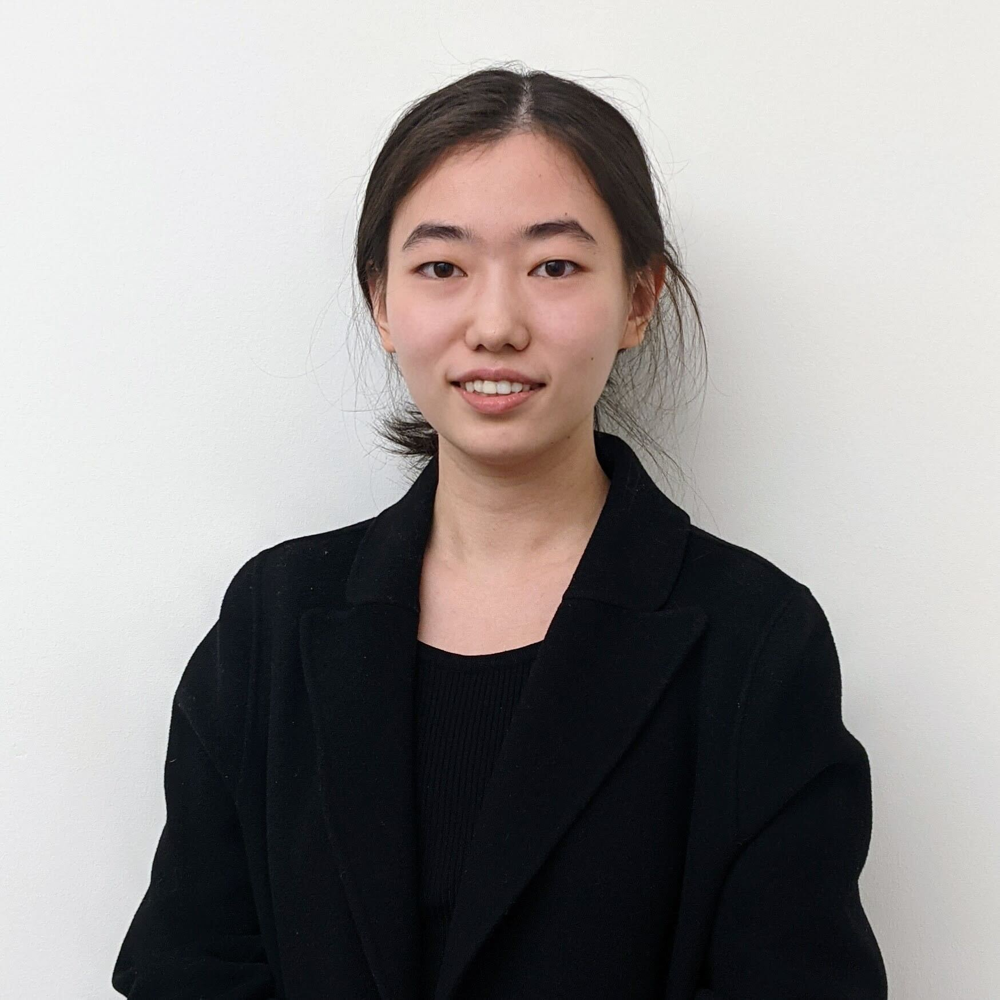

I am a Ph.D. candidate at the University of Washington, advised by Professor Yejin Choi. Previously, I was a Research Scientist at NVIDIA Research, and I received my B.S. degree in Computer Science at the University of Washington.
My broad research goal is to push the boundaries of machine intelligence and bridge the capability gap between models and humans by exploring alternative paths of efficient scaling, such as algorithmic innovations and knowledge enhancement. Over the past few years, I have focused on developing learning and inference algorithms to unlock capabilities in both frontier and compact models, as well as studying the capabilities and limits of language models, for example:
Email: lux32 [at] cs.washington.edu
Links: [Google Scholar] [Twitter] [Github] [CV]
Publications are listed in reverse chronological order. For a list of all publications, please check out my Google Scholar
Preprints (Under Review)
AI as Humanity's Salieri (ICLR 2025)
Faith and Fate (NeurIPS 2023)
ProRL (NeurIPS 2025)